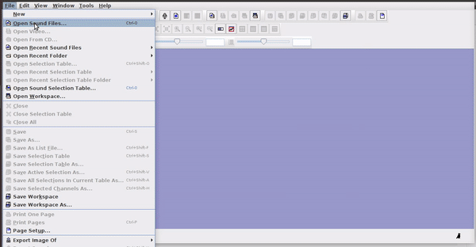
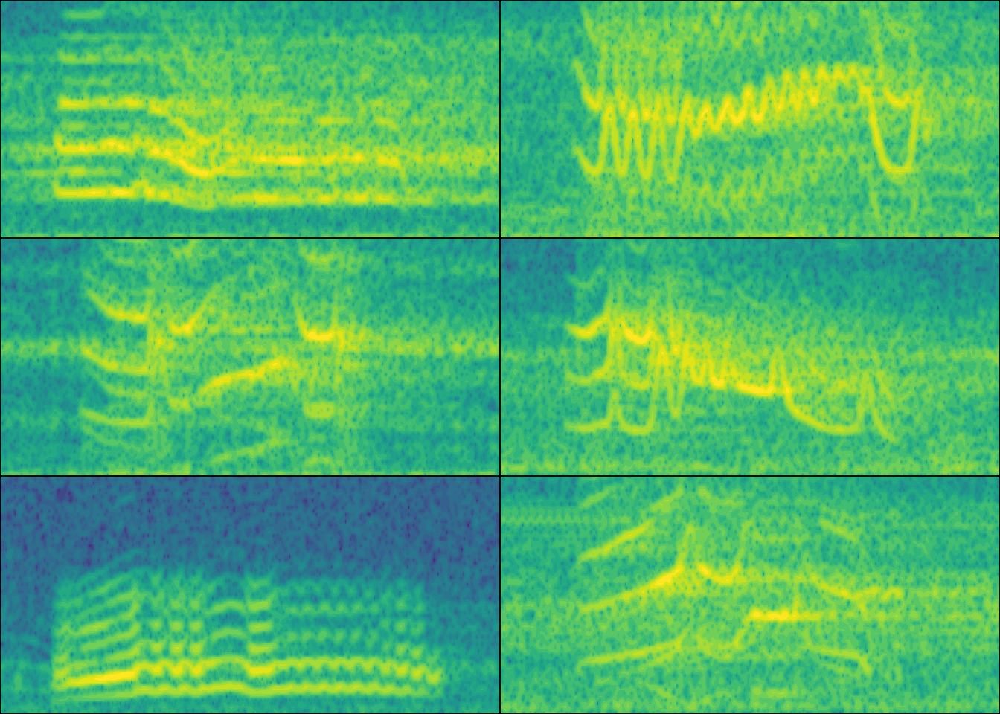

| sound.files | start | end |
|---|---|---|
| sound_file_1.wav | 2.04 | 3.53 |
| sound_file_1.wav | 2.79 | 2.84 |
| sound_file_2.wav | 3.19 | 6.22 |
| sound_file_2.wav | 4.10 | 5.24 |
Import annotations into R
Objetives
Learn various methods to import and export annotations in R
Get familiar with the data structure used for representing annotations in R
1 Annotation tables
An annotation table (or selection table in Raven’s terminology and warbleR) is a spreadsheet that contains information about the location (and frequency) of the sounds of interest in one or more sound files. Therefore, the basic annotation table should contain at least 3 columns:
Ideally we should also include the frequency range of the annotations:
| sound.files | start | end | bottom.freq | top.freq |
|---|---|---|---|---|
| sound_file_1.wav | 2.04 | 3.53 | 4.78 | 8.79 |
| sound_file_1.wav | 2.79 | 2.84 | 4.77 | 9.43 |
| sound_file_2.wav | 3.19 | 6.22 | 3.23 | 8.17 |
| sound_file_2.wav | 4.10 | 5.24 | 4.01 | 8.80 |
.. and a unique identifier (at least within each sound file) for each annotation:
| sound.files | selec | start | end | bottom.freq | top.freq |
|---|---|---|---|---|---|
| sound_file_1.wav | 1 | 2.04 | 3.53 | 4.78 | 8.79 |
| sound_file_1.wav | 2 | 2.79 | 2.84 | 4.77 | 9.43 |
| sound_file_2.wav | 1 | 3.19 | 6.22 | 3.23 | 8.17 |
| sound_file_2.wav | 2 | 4.10 | 5.24 | 4.01 | 8.80 |
Finally, for sound files with multiple channels, the annotation table should indicate in which channel the sound of interest is located:
| sound.files | channel | selec | start | end | bottom.freq | top.freq |
|---|---|---|---|---|---|---|
| sound_file_1.wav | 1 | 1 | 2.04 | 3.53 | 4.78 | 8.79 |
| sound_file_1.wav | 1 | 2 | 2.79 | 2.84 | 4.77 | 9.43 |
| sound_file_2.wav | 1 | 1 | 3.19 | 6.22 | 3.23 | 8.17 |
| sound_file_2.wav | 1 | 2 | 4.10 | 5.24 | 4.01 | 8.80 |
This format, with the same column names as in the previous example, is the one used by the warbleR package as a basic data object to work on batches of sounds (“batches”). The mandatory columns are “sound.files”, “selec”, “start”, and “end”. The frequency range columns (“bottom.freq” and “top.freq”) and the channel number (“channel”) are optional.
Annotation tables can be generated within R, or imported from sound analysis programs (mainly, Raven, Avisoft, Syrinx and Audacity).
2 Raven
Raven sound analysis software (Cornell Lab of Ornithology) provides very powerful tools for the analysis of sounds (animals). Raven allows you to use the cursor to manually define the frequency and time limits of the signals. It is a very flexible and user friendly program. The annotations can be saved in a selection file (selection table) in .txt format:

Selections can be reopened on the original file where they were made:

The selections with sound (sound selection table) are a special type of annotation that contains all the information about the address of the files and allows to be opened directly without opening the sound file first. To create these selections, you must include the ‘Begin File’, ‘Begin Path’ and “File offset (s) ’columns (the latter only if the file contains annotations for more than one sound file):

These selections open easily in Raven, as long as the sound files are kept in the original folders:

3 Rraven
The Rraven package is designed to facilitate data exchange between R and Raven sound analysis software. R can simplify the automation of complex analysis routines. In addition, R packages such as warbleR, seewave and monitorR (among others) provide additional methods of analysis, which work as a perfect complement to those found in Raven. Therefore, bridging these applications can greatly expand the bioacoustic toolkit.
Currently, most Raven analyzes cannot be run in the background from a command terminal. Therefore, most of the Rraven functions are designed to simplify the exchange of data between the two programs, and in some cases, export files to Raven for further analysis. This tutorial provides detailed examples for each function in Rraven, including both the R code and the additional steps required to fully conduct the analyses. Raven Pro must be installed in order to run some of the code.
In this link you will find several videos that show in detail the different tools in Raven.
http://ravensoundsoftware.com/video-tutorials/
4 Import Raven data
4.1 imp_raven
This function imports Raven selection tables. You can import several files at once. Raven can also import selection tables that include data from multiple recordings. The function returns a single data frame with the information contained in the selection files. We already have 4 Raven selection tables in the example directory:
Code
list.files(path = "./examples", pattern = "\\.txt$")[1] "Label Track3.txt" "LBH 1 selection table example.txt"
[3] "LBH 2 selection table example.txt" "LBH 3 selection table example.txt"
[5] "LBH 4 selection table example.txt"
This code shows how to import all the data contained in those files into R:
Code
rvn.dat <- imp_raven(all.data = TRUE, path = "./examples")
head(rvn.dat)1 file(s) could not be read: Label Track3.txt| Selection | View | Channel | Begin Time (s) | End Time (s) | Low Freq (Hz) | High Freq (Hz) | Begin File | channel | Begin Path | File Offset (s) | File Offset | selec.file |
|---|---|---|---|---|---|---|---|---|---|---|---|---|
| 1 | Spectrogram 1 | 1 | 1.169 | 1.342 | 2220 | 8604 | Phae.long1.wav | 1 | /tmp/RtmpWpOeaR/Phae.long1.wav | 1.169 | NA | LBH 1 selection table example.txt |
| 2 | Spectrogram 1 | 1 | 2.158 | 2.321 | 2169 | 8807 | Phae.long1.wav | 1 | /tmp/RtmpWpOeaR/Phae.long1.wav | 2.158 | NA | LBH 1 selection table example.txt |
| 3 | Spectrogram 1 | 1 | 0.343 | 0.518 | 2218 | 8757 | Phae.long1.wav | 1 | /tmp/RtmpWpOeaR/Phae.long1.wav | 0.343 | NA | LBH 1 selection table example.txt |
| 1 | Spectrogram 1 | 1 | 0.160 | 0.292 | 2317 | 8822 | Phae.long2.wav | 1 | /tmp/RtmpWpOeaR/Phae.long2.wav | 0.160 | NA | LBH 2 selection table example.txt |
| 2 | Spectrogram 1 | 1 | 1.457 | 1.583 | 2284 | 8888 | Phae.long2.wav | 1 | /tmp/RtmpWpOeaR/Phae.long2.wav | 1.457 | NA | LBH 2 selection table example.txt |
| 1 | Spectrogram 1 | 1 | 0.627 | 0.758 | 3007 | 8822 | Phae.long3.wav | 1 | /tmp/RtmpWpOeaR/Phae.long3.wav | NA | 0.627 | LBH 3 selection table example.txt |
Note that the ‘waveform’ view data has been deleted. It can also be imported as follows (but note that the example selection tables do not have waveform data):
Code
rvn.dat <- imp_raven(all.data = TRUE, waveform = TRUE, path = "./examples")
Raven selections can also be imported in ‘selection.table’ format so that you can input directly into warbleR functions. To do this, you only need to set warbler.format = TRUE:
Code
rvn.dat <- imp_raven(all.data = FALSE, freq.cols = TRUE, path = "./examples", warbler.format = TRUE, all.data = FALSE)
head(rvn.dat)1 file(s) could not be read: Label Track3.txt| selec | Channel | start | end | bottom.freq | top.freq | sound.files | channel | selec.file |
|---|---|---|---|---|---|---|---|---|
| 1 | 1 | 1.169355 | 1.342388 | 2.22011 | 8.60438 | Phae.long1.wav | 1 | LBH 1 selection table example.txt |
| 2 | 1 | 2.158408 | 2.321457 | 2.16944 | 8.80705 | Phae.long1.wav | 1 | LBH 1 selection table example.txt |
| 3 | 1 | 0.343337 | 0.518255 | 2.21829 | 8.75660 | Phae.long1.wav | 1 | LBH 1 selection table example.txt |
| 1 | 1 | 0.159598 | 0.292169 | 2.31686 | 8.82232 | Phae.long2.wav | 1 | LBH 2 selection table example.txt |
| 2 | 1 | 1.457058 | 1.583209 | 2.28401 | 8.88803 | Phae.long2.wav | 1 | LBH 2 selection table example.txt |
| 1 | 1 | 0.626552 | 0.757771 | 3.00683 | 8.82232 | Phae.long3.wav | 1 | LBH 3 selection table example.txt |
The output data frame contains the following columns: “sound.files”, “channel”, “selec”, “start”, “end” and “selec.file.” You can also import the frequency range parameters in ‘selection.table’ by setting ‘freq.cols’ tp TRUE. The data frame returned by imp_raven() (when in the warbleR format) can be entered into several functions of warbleR for a more detailed analysis.
4.2 relabel_colms
This is a simple function to re-label the columns to match the format of the selection table used in warbleR:
Code
# para simplificar solo las primeras 7 columnas
st1 <- rvn.dat[ ,1:7]
st1Code
relabel_colms(st1)
Additional columns can also be re-labeled:
Code
relabel_colms(st1, extra.cols.name = "View",
extra.cols.new.name = "Raven view")| selec | Channel | start | end | bottom.freq | top.freq | sound.files |
|---|---|---|---|---|---|---|
| 1 | 1 | 1.169355 | 1.342388 | 2.22011 | 8.60438 | Phae.long1.wav |
| 2 | 1 | 2.158408 | 2.321457 | 2.16944 | 8.80705 | Phae.long1.wav |
| 3 | 1 | 0.343337 | 0.518255 | 2.21829 | 8.75660 | Phae.long1.wav |
| 1 | 1 | 0.159598 | 0.292169 | 2.31686 | 8.82232 | Phae.long2.wav |
| 2 | 1 | 1.457058 | 1.583209 | 2.28401 | 8.88803 | Phae.long2.wav |
| 1 | 1 | 0.626552 | 0.757771 | 3.00683 | 8.82232 | Phae.long3.wav |
| 2 | 1 | 1.974213 | 2.104392 | 2.77684 | 8.88803 | Phae.long3.wav |
| 3 | 1 | 0.123364 | 0.254581 | 2.31686 | 9.31515 | Phae.long3.wav |
| 1 | 1 | 1.516812 | 1.662236 | 2.51400 | 9.21659 | Phae.long4.wav |
| 2 | 1 | 2.932692 | 3.076878 | 2.57971 | 10.23512 | Phae.long4.wav |
| 3 | 1 | 0.145398 | 0.290497 | 2.57971 | 9.74228 | Phae.long4.wav |
5 Export R data to Raven
5.1 exp_raven
exp_raven saves a selection table in ‘.txt’ format that can be opened directly in Raven. No objects are returned to the R environment. The following code exports a selection table from a single sound file:
Code
st1 <- lbh_selec_table[lbh_selec_table$sound.files == "Phae.long1.wav",]
exp_raven(st1, file.name = "Phaethornis 1", khz.to.hz = TRUE)
If the path to the sound file is provided, the functions export a ‘sound selection table’ that can be opened directly by Raven (and which will also open the associated sound file):
Code
st1 <- lbh_selec_table[lbh_selec_table$sound.files == "Phae.long1.wav",]
exp_raven(st1, file.name = "Phaethornis 1", khz.to.hz = TRUE, sound.file.path = "./examples")
This is useful for adding new selections or even new measurements:

If there are several sound files available, users can export them as a single selection file or as multiple selection files (one for each sound file). This example creates a multiple selection of sound files:
Code
exp_raven(X = lbh_selec_table, file.name = "Phaethornis multiple sound files",
sound.file.path = "./examples", single.file = TRUE)
These types of tables can be opened as a multi-file display in Raven:

Exercise
- Annotate 2 sound files from the “./examples” folder using Raven
- Import the annotation files into R using Rraven’s
imp_raven()
6 warbleR formats
6.1 Selection tables
These objects are created with the selection_table() function. The function takes data frames containing selection data (name of the sound file, selection, start, end …), verifies if the information is consistent (see the function check_sels() for details) and saves the ‘diagnostic’ metadata as an attribute. The selection tables are basically data frames in which the information contained has been corroborated so it can be read by other warbleR functions. The selection tables must contain (at least) the following columns:
- sound files (sound.files)
- selection (selec)
- start
- end
The sample data “lbh_selec_table” contains these columns:
Code
library(warbleR)
data("lbh_selec_table")
lbh_selec_table| sound.files | channel | selec | start | end | bottom.freq | top.freq |
|---|---|---|---|---|---|---|
| Phae.long1.wav | 1 | 1 | 1.169355 | 1.342388 | 2.22011 | 8.60438 |
| Phae.long1.wav | 1 | 2 | 2.158408 | 2.321457 | 2.16944 | 8.80705 |
| Phae.long1.wav | 1 | 3 | 0.343337 | 0.518255 | 2.21829 | 8.75660 |
| Phae.long2.wav | 1 | 1 | 0.159598 | 0.292169 | 2.31686 | 8.82232 |
| Phae.long2.wav | 1 | 2 | 1.457058 | 1.583209 | 2.28401 | 8.88803 |
| Phae.long3.wav | 1 | 1 | 0.626552 | 0.757771 | 3.00683 | 8.82232 |
| Phae.long3.wav | 1 | 2 | 1.974213 | 2.104392 | 2.77684 | 8.88803 |
| Phae.long3.wav | 1 | 3 | 0.123364 | 0.254581 | 2.31686 | 9.31515 |
| Phae.long4.wav | 1 | 1 | 1.516812 | 1.662236 | 2.51400 | 9.21659 |
| Phae.long4.wav | 1 | 2 | 2.932692 | 3.076878 | 2.57971 | 10.23512 |
| Phae.long4.wav | 1 | 3 | 0.145398 | 0.290497 | 2.57971 | 9.74228 |
… and can be converted to the selection_table format like this:
Code
# global parameters
warbleR_options(wav.path = "./examples")
st <- selection_table(X = lbh_selec_table, pb = FALSE)
st| sound.files | channel | selec | start | end | bottom.freq | top.freq |
|---|---|---|---|---|---|---|
| Phae.long1.wav | 1 | 1 | 1.169355 | 1.342388 | 2.22011 | 8.60438 |
| Phae.long1.wav | 1 | 2 | 2.158408 | 2.321457 | 2.16944 | 8.80705 |
| Phae.long1.wav | 1 | 3 | 0.343337 | 0.518255 | 2.21829 | 8.75660 |
| Phae.long2.wav | 1 | 1 | 0.159598 | 0.292169 | 2.31686 | 8.82232 |
| Phae.long2.wav | 1 | 2 | 1.457058 | 1.583209 | 2.28401 | 8.88803 |
| Phae.long3.wav | 1 | 1 | 0.626552 | 0.757771 | 3.00683 | 8.82232 |
| Phae.long3.wav | 1 | 2 | 1.974213 | 2.104392 | 2.77684 | 8.88803 |
| Phae.long3.wav | 1 | 3 | 0.123364 | 0.254581 | 2.31686 | 9.31515 |
| Phae.long4.wav | 1 | 1 | 1.516812 | 1.662236 | 2.51400 | 9.21659 |
| Phae.long4.wav | 1 | 2 | 2.932692 | 3.076878 | 2.57971 | 10.23512 |
| Phae.long4.wav | 1 | 3 | 0.145398 | 0.290497 | 2.57971 | 9.74228 |
Note that the path to the sound files has been provided. This is necessary in order to verify that the data provided conforms to the characteristics of the audio files.
Selection tables have their own class in R:
Code
class(st)[1] "selection_table" "data.frame"
6.2 Extended selection tables
When the extended = TRUE argument the function generates an object of the extended_selection_table class that also contains a list of ‘wave’ objects corresponding to each of the selections in the data. Therefore, the function transforms the selection table into self-contained objects since the original sound files are no longer needed to perform most of the acoustic analysis in warbleR. This can greatly facilitate the storage and exchange of (bio)acoustic data. In addition, it also speeds up analysis, since it is not necessary to read the sound files every time the data is analyzed.
Now, as mentioned earlier, you need the selection_table() function to create an extended selection table. You must also set the argument extended = TRUE (otherwise, the class would be a selection table). The following code converts the sample data into an extended selection table:
Code
# global parameters
warbleR_options(wav.path = "./examples")
ext_st <- selection_table(X = lbh_selec_table, pb = FALSE,
extended = TRUE, confirm.extended = FALSE)Warning: 'confirm.extended' has been deprecated and will be ignored
And that is. Now the acoustic data and the selection data (as well as the additional metadata) are all together in a single R object. The wave objects contained in the extended_selection_table can be easily extracted using the warbleR function read_sound_file:
Code
w1 <- read_sound_file(ext_st, index = 1)
w1
Wave Object
Number of Samples: 3893
Duration (seconds): 0.17
Samplingrate (Hertz): 22500
Channels (Mono/Stereo): Mono
PCM (integer format): TRUE
Bit (8/16/24/32/64): 16
The index argument indicates the row of the selection that will be read.
This new object class allows to share complete data sets, including acoustic data. For example, the following code downloads a subset of the data used in Araya-Salas et al (2017):
Code
URL <- "https://github.com/maRce10/OTS_BIR_2024/raw/master/data/extended.selection.table.araya-salas.et.al.2017.bioacoustics.100.sels.rds"
dat <- readRDS(gzcon(url(URL)))
nrow(dat)[1] 100Code
format(object.size(dat), units = "auto")[1] "10.1 Mb"The total size of the 100 sound files from which these selections were taken adds up to 1.1 GB. The size of the extended selection table is only 10.1 MB.
This data is ready to be used. For instance, here I create a multipanel graph with the spectrograms of the first 6 selections:
Code
par(mfrow = c(3, 2), mar = rep(0, 4))
for(i in 1:6){
wv <- read_wave(X = dat, index = i, from = 0.17, to = 0.4)
spectro(
wv,
wl = 250,
grid = FALSE,
scale = FALSE,
axisX = FALSE,
axisY = FALSE,
ovlp = 90,
flim = c(0, 12),
palette = viridis::viridis,
collevels = seq(-120, 0, 5)
)
}
Exercise
Run the example code in the
selection_table()function documentationWhat do the arguments “mar” and “by.song” from
selection_table()do?Measure the peak frequency of the 8th selection (hint: use seewave’s
fpeaks())
7 References
- Araya-Salas (2017), Rraven: connecting R and Raven bioacoustic software. R package version 1.0.2.
Session information
R version 4.3.2 (2023-10-31)
Platform: x86_64-pc-linux-gnu (64-bit)
Running under: Ubuntu 22.04.2 LTS
Matrix products: default
BLAS: /usr/lib/x86_64-linux-gnu/blas/libblas.so.3.10.0
LAPACK: /usr/lib/x86_64-linux-gnu/lapack/liblapack.so.3.10.0
locale:
[1] LC_CTYPE=en_US.UTF-8 LC_NUMERIC=C LC_TIME=en_US.UTF-8
[4] LC_COLLATE=en_US.UTF-8 LC_MONETARY=en_US.UTF-8 LC_MESSAGES=en_US.UTF-8
[7] LC_PAPER=en_US.UTF-8 LC_NAME=C LC_ADDRESS=C
[10] LC_TELEPHONE=C LC_MEASUREMENT=en_US.UTF-8 LC_IDENTIFICATION=C
time zone: America/Costa_Rica
tzcode source: system (glibc)
attached base packages:
[1] stats graphics grDevices utils datasets methods base
other attached packages:
[1] kableExtra_1.3.4 warbleR_1.1.30 NatureSounds_1.0.4 knitr_1.46 seewave_2.2.3
[6] tuneR_1.4.6
loaded via a namespace (and not attached):
[1] viridis_0.6.5 generics_0.1.3 utf8_1.2.4 bitops_1.0-7 xml2_1.3.6
[6] stringi_1.8.3 digest_0.6.35 magrittr_2.0.3 evaluate_0.23 grid_4.3.2
[11] fastmap_1.1.1 jsonlite_1.8.8 brio_1.1.4 gridExtra_2.3 httr_1.4.7
[16] rvest_1.0.3 fansi_1.0.6 viridisLite_0.4.2 scales_1.3.0 pbapply_1.7-2
[21] cli_3.6.2 rlang_1.1.3 fftw_1.0-8 munsell_0.5.0 yaml_2.3.8
[26] tools_4.3.2 parallel_4.3.2 dplyr_1.1.4 colorspace_2.1-0 Rraven_1.0.13
[31] ggplot2_3.5.1 webshot_0.5.5 vctrs_0.6.5 R6_2.5.1 proxy_0.4-27
[36] lifecycle_1.0.4 dtw_1.23-1 stringr_1.5.1 htmlwidgets_1.6.4 MASS_7.3-55
[41] pkgconfig_2.0.3 pillar_1.9.0 gtable_0.3.4 glue_1.7.0 Rcpp_1.0.12
[46] systemfonts_1.0.5 tidyselect_1.2.0 tibble_3.2.1 xfun_0.43 highr_0.10
[51] rstudioapi_0.15.0 rjson_0.2.21 htmltools_0.5.8.1 rmarkdown_2.26 svglite_2.1.3
[56] testthat_3.2.1 signal_1.8-0 compiler_4.3.2 RCurl_1.98-1.14